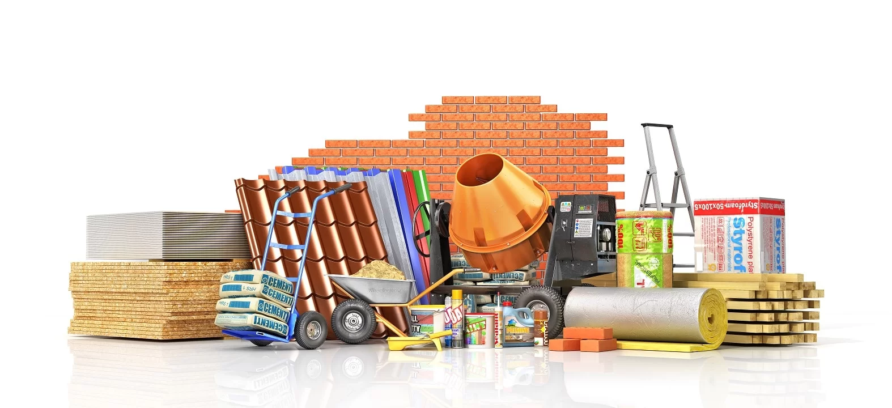

Quem somos?
Bem-vindo ao Site da Construtora-Moura - Construção com Qualidade e Comprometimento Explore o mundo da construção com a Moura, líder no setor há mais de 10 anos. Nosso compromisso com a excelência e a inovação nos permite oferecer soluções completas em construção civil para uma ampla gama de projetos.
Serviços
- Construção Residencial: Desde casas familiares até complexos residenciais, garantimos qualidade em cada detalhe.
- Construção Comercial: Desenvolvemos espaços corporativos modernos e funcionais para atender às necessidades do seu negócio.
- Reforma e Restauração: Transformamos e revitalizamos edifícios históricos e contemporâneos com expertise e cuidado.
Compromisso com a Qualidade
Na Moura, qualidade é nossa marca registrada. Utilizamos materiais de primeira linha e contamos com uma equipe de profissionais qualificados que garantem padrões elevados em cada etapa do processo construtivo
ACESSE TAMBÉM NOSSA LOJA VIRTUAL E RECEBA SEUS MATERIAIS EM CASA!
Clique na imagem e acesse o site de compras de materiais de construção
Voltar ao início da página